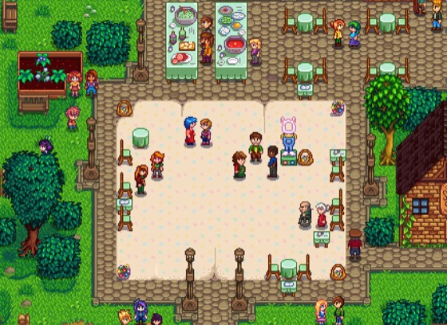
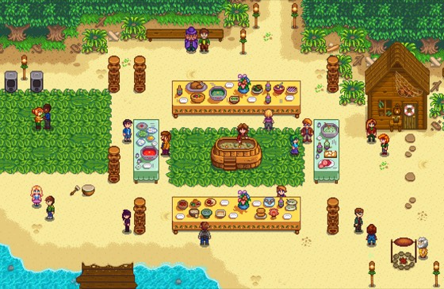
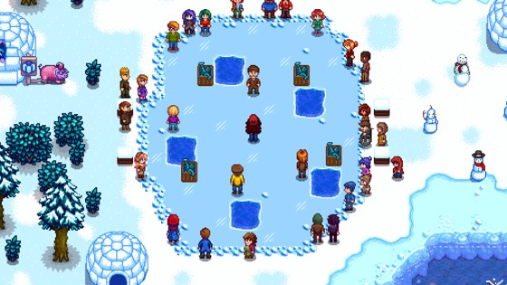
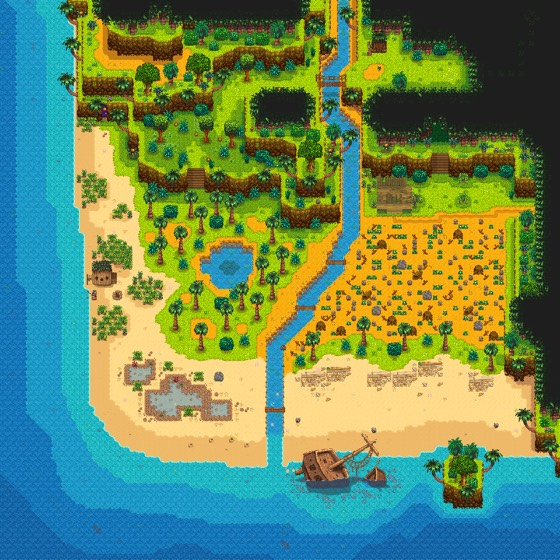

Galerie
Vybral jsem pro vás pár obrázků z údolí: festivaly, které se během roku konají, a místa, kam se během hry podíváte.
-

Velikonoční slavnost Jarní festival, na kterém se hledají vajíčka. -

Luau Letní slavnost na pláži, kde se vaří společná polévka. -

Ledový festival Zimní soutěž v rybaření na zamrzlém jezeře. -

Komunitní centrum Takhle se slaví, když dokončíte všechny balíčky. -

Pelican Town Městečko, kde bydlí všichni vesničané. -

Ginger Island Tropický ostrov, který přibyl v aktualizaci 1.5.